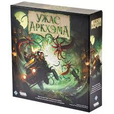
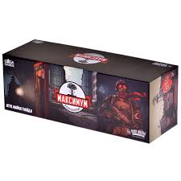
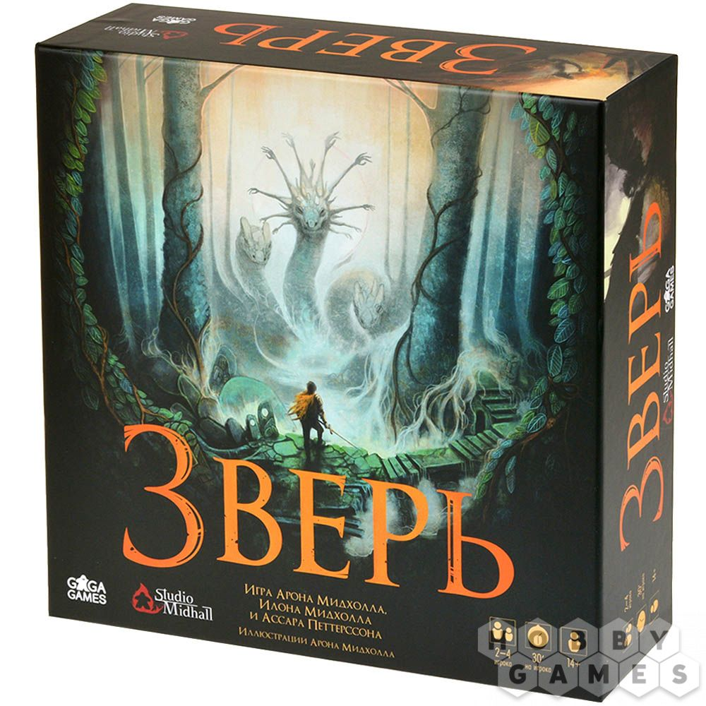
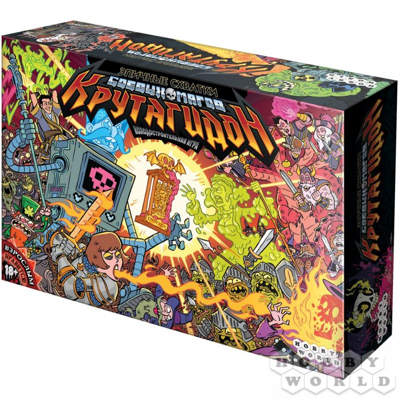
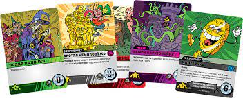
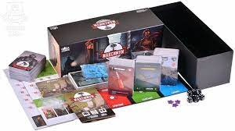
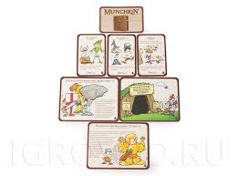
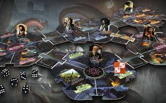
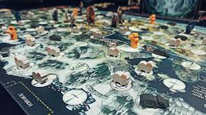

Настолки, которые я обожаю и не только...
«Боевые маги»

— это настольная игра, в которой игроки берут на себя роли магов,
сражающихся друг с другом в различных битвах и дуэлях. Игра сочетает в себе элементы стратегии, тактики
и фэнтези, что делает её интересной для любителей магических сражений.
Основные элементы игры:
- Персонажи: Каждый игрок выбирает или создаёт своего мага, который обладает уникальными способностями,
заклинаниями и характеристиками. Это может включать
в себя различные школы магии, такие как огненная, ледяная, темная и светлая магия.
- Заклинания и способности: Игроки могут использовать различные заклинания в зависимости от выбранного
персонажа. Заклинания могут иметь разные эффекты: атакующие, защитные, поддерживающие и т.д.
-
Поле боя: Игра может проходить на специальном игровом поле, которое может иметь различные ландшафты и препятствия, влияющие на стратегию сражений.
-
Механика боя: Бои могут происходить поочередно, где игроки используют свои заклинания и способности для нанесения
урона противнику или защиты себя. Механика может включать в себя броски кубиков для определения успеха заклинаний и атак.
-
Ресурсы: Игроки могут управлять ресурсами, такими как мана или энергия, которые необходимы для
использования заклинаний. Это добавляет элемент стратегии, так как нужно грамотно планировать свои действия.
-
Цели игры: Игра может иметь различные сценарии и цели, например, уничтожение всех противников,
выполнение определенных квестов или захват контрольных точек на поле боя.
Атмосфера и оформление:
Игра обычно оформлена в фэнтезийном стиле, с яркими иллюстрациями, картами заклинаний
и миниатюрами магов. Это создает увлекательную атмосферу, погружающую игроков в мир магии и сражений.
«Максимум Апокалипсис»

«Максимум Апокалипсис» — это кооперативная настольная игра, в которой игроки берут на себя роли
различных героев, пытающихся выжить в мире после апокалипсиса. Игра предлагает уникальное сочетание приключений,
стратегии и взаимодействия между игроками.
Основные элементы игры:
-
Персонажи: Игроки выбирают уникальных героев, каждый из которых обладает особыми
способностями и навыками, что влияет на стиль игры и стратегии выживания.
-
Сценарии: Игра включает в себя различные сценарии, которые могут варьироваться от борьбы с зомби до сражений с мутантами или роботами. Каждый сценарий предлагает свои уникальные вызовы и цели.
-
Кооперативный геймплей: Игроки должны работать вместе, чтобы преодолеть препятствия и выжить в условиях постапокалиптического мира. Это требует стратегического планирования и совместных действий.
-
Механика игры: Игра включает в себя элементы исследования, сражений и управления ресурсами. Игроки исследуют карты, собирают предметы и сражаются с врагами, используя свои способности.
-
Дополнения: Игра имеет несколько дополнений, таких как «Жукогеддон», которые добавляют новые сценарии, персонажей и механики, расширяя возможности для игры.
Атмосфера и оформление:
«Максимум Апокалипсис» оформлен в стиле постапокалипсиса с яркими иллюстрациями и детализированными компонентами. Это создает захватывающую атмосферу, погружающую игроков в мир, полный опасностей и приключений.
«Манчкин»

«Манчкин» — это настольная игра, созданная Стивеном Джексоном, которая пародирует классические ролевые игры и фэнтезийные приключения.
Игра известна своим юмором, простотой правил и элементами стратегии, что делает её популярной среди игроков всех возрастов.
Основные элементы игры:
-
Игроки и цель: Игра предназначена для 3-6 игроков, и цель каждого игрока — первым достичь 10 уровня, побеждая монстров и собирая сокровища.
-
Карты:
Игра состоит из двух типов карт:
-
Карты дверей: Эти карты могут содержать монстров, проклятия, классы персонажей и расы. Игроки открывают двери, чтобы сразиться с монстрами или получить другие эффекты.
-
Карты сокровищ: Эти карты дают игрокам различные предметы, улучшения и бонусы, которые помогают в сражениях.
-
Сражения: Когда игрок открывает дверь с монстром, он должен с ним сразиться. Игроки могут использовать свои карты сокровищ и способности,
чтобы увеличить свои шансы на победу. Другие игроки могут вмешиваться в бой, помогая или мешая.
-
Юмор и пародия: «Манчкин» известен своим остроумным и ироничным подходом к фэнтезийному жанру.
Многие карты и ситуации высмеивают стереотипы ролевых игр, что добавляет веселья в игровой процесс.
Атмосфера и оформление:
Игра оформлена в ярком и комичном стиле, с иллюстрациями, которые подчеркивают юмор и иронию. Каждая карта имеет свои уникальные и забавные изображения, что делает игру визуально привлекательной.
«Ужас Аркхэма»

— это кооперативная настольная игра в жанре ужасов и мистики, основанная на произведениях Говарда Лавкрафта и его мифах. Игра погружает игроков в мир Аркхэма, вымышленного города, который
сталкивается с ужасными силами из других измерений. Игроки берут на себя роли исследователей, которые пытаются остановить древние существа и предотвратить апокалипсис.
Основные элементы игры:
-
Персонажи:Игроки выбирают исследователей, каждый из которых обладает уникальными навыками, характеристиками и способностями. Персонажи могут быть, например, писателями, детективами, профессорами и другими героями, каждый из которых имеет свои сильные и слабые стороны.
-
Сценарии: Игра включает в себя множество событий, которые могут произойти в ходе партии. Игроки могут выполнять квесты, чтобы собрать улики и закрыть врата в другие измерения, что помогает предотвратить пробуждение древнего существа.
-
Кооперативный геймплей: Игроки должны работать вместе, чтобы справиться с угрозами, делиться ресурсами и планировать свои действия. Стратегия и командная работа являются ключевыми для успешного завершения игры.
-
Механика игры: Игра включает в себя броски кубиков, управление ресурсами и случайные события. Игроки могут накапливать предметы и заклинания, которые помогут им в борьбе с монстрами и в выполнении квестов.
Атмосфера и оформление:
«Ужас Аркхэма» оформлен в мрачном и атмосферном стиле, с детализированными иллюстрациями и компонентами, которые создают ощущение напряжения и ужаса. Музыка и звуковые эффекты могут дополнительно усиливать атмосферу во время игры.
«Зверь»

— это настольная игра, разработанная российским дизайнером Игорем Дорофеевым,
которая сочетает в себе элементы стратегии, тактики и взаимодействия между игроками. Игра предлагает уникальный игровой процесс, в котором участники
становятся «зверями», соревнующимися друг с другом за ресурсы и влияние.
Основные элементы игры:
-
Персонажи:Каждый игрок выбирает или получает уникального персонажа с особыми способностями и характеристиками. Эти персонажи могут влиять на стратегию игры и взаимодействие с другими игроками.
-
Игровые компоненты: Игра включает в себя игровое поле, карты, фишки и другие компоненты, которые помогают создать атмосферу и визуально поддерживают игровой процесс.
-
Конфликты и взаимодействие: В игре предусмотрены элементы конкуренции и конфликта, где игроки могут взаимодействовать друг с другом, создавая альянсы или соперничая за ресурсы.
-
Механика игры: Игроки собирают ресурсы, выполняют задания и взаимодействуют друг с другом, чтобы продвигаться по игровому полю и набирать очки. Механика может включать в себя элементы управления ресурсами, торговли и тактики.
-
Цели и победа: Игроки стремятся набрать максимальное количество очков, выполняя различные задачи и достигая определенных целей. Игра может иметь несколько путей к победе, что добавляет разнообразия в стратегии.
Атмосфера и оформление:
«Зверь» оформлен в интересном и ярком стиле, который подчеркивает тематику игры. Иллюстрации и дизайн компонентов создают уникальную атмосферу, привлекающую внимание игроков.